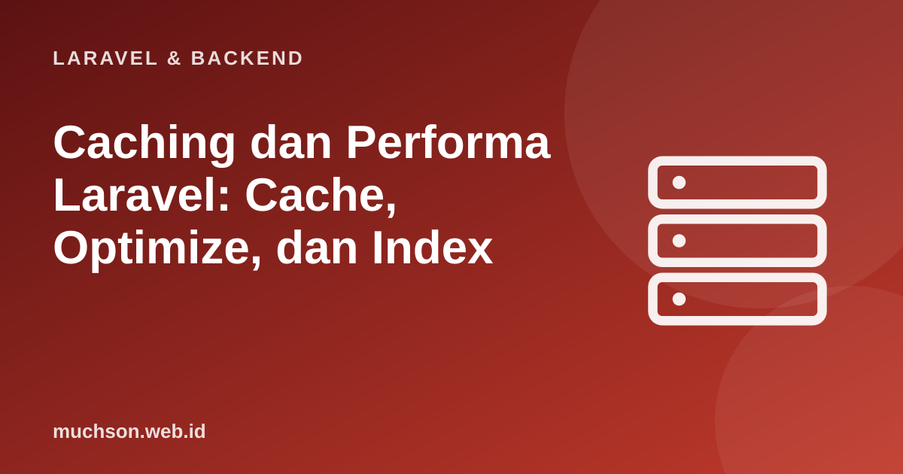

Beranda › Artikel › Laravel & Backend
Laravel & BackendCaching dan Performa Laravel: Cache, Optimize, dan Index
Aplikasi lambat jarang disebabkan PHP itu sendiri. Hampir selalu penyebabnya adalah terlalu banyak query, query tanpa indeks, atau pekerjaan berulang yang tidak perlu diulang. Urutan kerjanya: ukur, perbaiki query dan indeks, baru kemudian gunakan cache untuk hal yang benar-benar mahal. Cache yang ditambahkan terlalu dini hanya menyembunyikan masalah dan menambah bug basi.
Sebaiknya sudah paham: Eloquent, N+1 query

Setelah membaca dan mencoba materi ini, Anda mampu:
- mengukur sebelum mengoptimasi (query, waktu respons)
- memperbaiki N+1 dan menambah indeks yang tepat
- memakai pola cache-aside dengan Cache::remember dan TTL
- merancang invalidasi cache agar data tidak basi
- memakai optimasi produksi: config, route, view cache, dan opcache
Kode PHP/Laravel di artikel ini mengikuti dokumentasi Laravel (versi 11 dan seterusnya, PHP 8.2 atau lebih baru). Bagian "cara kerja di balik layar" dijalankan sungguhan dengan Python atau JavaScript agar konsepnya dapat dibuktikan.
Urutan optimasi
- Ukur: waktu respons, jumlah query per halaman, query paling lambat (Debugbar, Telescope, log query, APM seperti Sentry atau New Relic).
- Kurangi query: perbaiki N+1 dengan eager loading, ambil kolom seperlunya, paginasi.
- Percepat query: tambah indeks pada kolom where, join, order by.
- Cache hasil yang mahal dan jarang berubah.
- Pindahkan pekerjaan berat ke antrean.
- Optimasi server: opcache, cache konfigurasi, PHP-FPM yang disetel, CDN untuk aset.
Indeks: perbedaan antara milidetik dan detik
Tanpa indeks, basis data memindai seluruh tabel untuk menemukan baris. Dengan indeks (pohon B), ia melompat langsung. Peragaan dengan SQLite:
import sqlite3, time, random
db = sqlite3.connect(":memory:")
db.execute("CREATE TABLE pesanan (id INTEGER PRIMARY KEY, user_id INTEGER, status TEXT, total INTEGER)")
rng = random.Random(1)
db.executemany("INSERT INTO pesanan (user_id, status, total) VALUES (?, ?, ?)",
[(rng.randint(1, 50_000), rng.choice(["baru", "bayar", "kirim", "selesai"]), rng.randint(10, 500) * 1000) for _ in range(300_000)])
def ukur(sql, args=(), ulang=30):
t0 = time.perf_counter()
for _ in range(ulang): db.execute(sql, args).fetchall()
return (time.perf_counter() - t0) / ulang * 1000
sql = "SELECT id, total FROM pesanan WHERE user_id = ?"
print("rencana sebelum indeks :", db.execute("EXPLAIN QUERY PLAN " + sql, (777,)).fetchall()[0][3])
sebelum = ukur(sql, (777,))
db.execute("CREATE INDEX idx_pesanan_user ON pesanan (user_id)")
print("rencana sesudah indeks :", db.execute("EXPLAIN QUERY PLAN " + sql, (777,)).fetchall()[0][3])
sesudah = ukur(sql, (777,))
print(f"tanpa indeks: {sebelum:8.3f} ms per query")
print(f"dengan indeks: {sesudah:7.3f} ms per query ({sebelum / sesudah:,.0f}x lebih cepat)")rencana sebelum indeks : SCAN pesanan
rencana sesudah indeks : SEARCH pesanan USING INDEX idx_pesanan_user (user_id=?)
tanpa indeks: 8.537 ms per query
dengan indeks: 0.007 ms per query (1,257x lebih cepat)
<?php
// Migrasi: indeks tunggal, gabungan, dan unik
$table->index('user_id');
$table->index(['status', 'created_at']); // urutan kolom penting: untuk where status = ? order by created_at
$table->unique('kode');
// Aturan praktis:
// - kunci asing (user_id, kategori_id) hampir selalu perlu indeks
// - kolom di where/order by yang sering dipakai pada tabel besar
// - jangan indeks semuanya: tiap indeks memperlambat penulisan dan memakai ruangCache-aside dengan Cache::remember
<?php
use Illuminate\Support\Facades\Cache;
// Ambil dari cache; bila tidak ada, jalankan closure, simpan 10 menit, lalu kembalikan
$kategori = Cache::remember('kategori:semua', now()->addMinutes(10), function () {
return Kategori::withCount('produk')->orderBy('nama')->get();
});
// Kunci yang memuat parameter agar tidak bercampur
$halaman = $request->integer('page', 1);
$produk = Cache::remember("produk:terlaris:halaman:{$halaman}", 300, fn () => Produk::terlaris()->paginate(12));
// Invalidasi: hapus saat data berubah (di model observer atau event)
Cache::forget('kategori:semua');
// Tag (driver Redis/Memcached): hapus sekelompok kunci sekaligus
Cache::tags(['produk'])->remember('produk:terlaris', 300, fn () => ...);
Cache::tags(['produk'])->flush();// Pola cache-aside dengan TTL dan invalidasi: peragaan berapa banyak panggilan "mahal" yang dihemat
function buatCache() {
const simpan = new Map();
let sekarang = 0, panggilanMahal = 0, hit = 0, miss = 0;
return {
maju: ms => { sekarang += ms; },
remember(kunci, ttl, fn) {
const e = simpan.get(kunci);
if (e && e.kedaluwarsa > sekarang) { hit++; return e.nilai; }
miss++; panggilanMahal++;
const nilai = fn();
simpan.set(kunci, { nilai, kedaluwarsa: sekarang + ttl });
return nilai;
},
forget: k => simpan.delete(k),
statistik: () => ({ hit, miss, panggilanMahal }),
};
}
const c = buatCache();
let dbKategori = ['Kopi', 'Teh'];
const mahal = () => [...dbKategori]; // seolah query yang lambat
for (let t = 0; t < 8; t++) { c.remember('kategori', 5000, mahal); c.maju(1000); } // 8 permintaan, 1 detik apart, TTL 5 detik
console.log('tanpa perubahan data :', JSON.stringify(c.statistik()), '(8 permintaan -> 2 query, bukan 8)');
dbKategori.push('Gula'); // data berubah!
console.log('setelah data berubah :', JSON.stringify(c.remember('kategori', 5000, mahal)), '<- BASI sampai TTL habis');
c.forget('kategori'); // invalidasi eksplisit saat menyimpan data
console.log('setelah invalidasi :', JSON.stringify(c.remember('kategori', 5000, mahal)));tanpa perubahan data : {"hit":6,"miss":2,"panggilanMahal":2} (8 permintaan -> 2 query, bukan 8)
setelah data berubah : ["Kopi","Teh"] <- BASI sampai TTL habis
setelah invalidasi : ["Kopi","Teh","Gula"]Jangan menyimpan data khusus pengguna dalam kunci cache umum: misalnya Cache::remember("keranjang", ...) tanpa ID pengguna akan menampilkan keranjang orang lain. Sertakan semua variabel yang memengaruhi hasil (pengguna, bahasa, halaman, filter) di kunci.
Optimasi produksi bawaan Laravel
php artisan optimize # menyimpan cache config, route, event, dan view sekaligus
# yang dilakukan: config:cache, route:cache, view:cache, event:cache
php artisan optimize:clear # membersihkan semuanya (saat debugging)
composer install --no-dev --optimize-autoloader # tanpa dependensi pengembangan, autoloader dioptimasi
# .env produksi
APP_ENV=production
APP_DEBUG=false
LOG_LEVEL=warningDaftar periksa performa
1. Halaman beranda menampilkan 12 produk dan nama kategori masing-masing; berapa query jika N+1? Berapa dengan eager loading?
2. Query WHERE status = ? ORDER BY created_at lambat; indeks seperti apa?
3. Mengapa env() jangan dipakai di luar berkas config setelah config:cache?
4. Kapan TTL pendek cukup tanpa invalidasi eksplisit?
- Ukur dulu; perbaiki N+1 dan indeks sebelum menambah cache.
- Cache::remember (cache-aside) dengan TTL dan invalidasi; kunci memuat semua variabel penentu hasil.
- php artisan optimize, opcache, dan autoloader teroptimasi di produksi; APP_DEBUG=false.
- Pindahkan pekerjaan berat ke antrean; gunakan Redis dan CDN untuk skala.